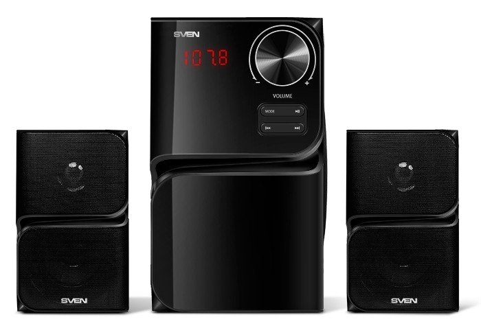
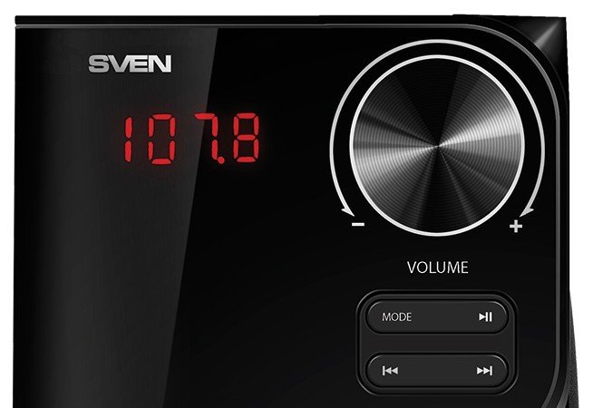
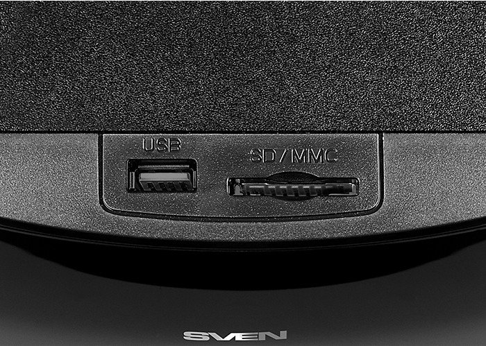
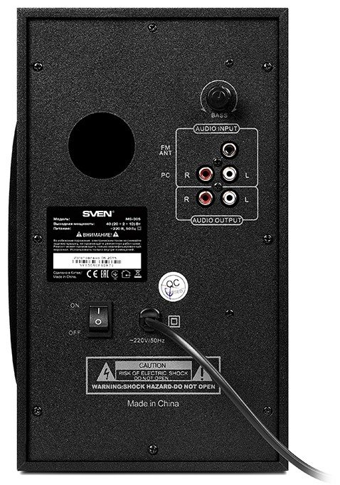

Основні
- Формат акустики: 2.1
- Загальна вихідна потужність: 40 Вт

Динаміки
- 40–20 000 Гц

Інтерфейси і кабелі
- Інтерфейси:
- x RCA
- Bluetooth
- x RCA
- Bluetooth

Додатково
- Живлення: Від мережі
- Матеріал корпусу MDF
- Особливості
- Вбудований тюнер
- Пульт ДУ
- Регулювання НЧ
- Габарити 104 x 171 x 108 мм
- Вага 3.7 кг
- Вбудований тюнер
- Пульт ДУ
- Регулювання НЧ
